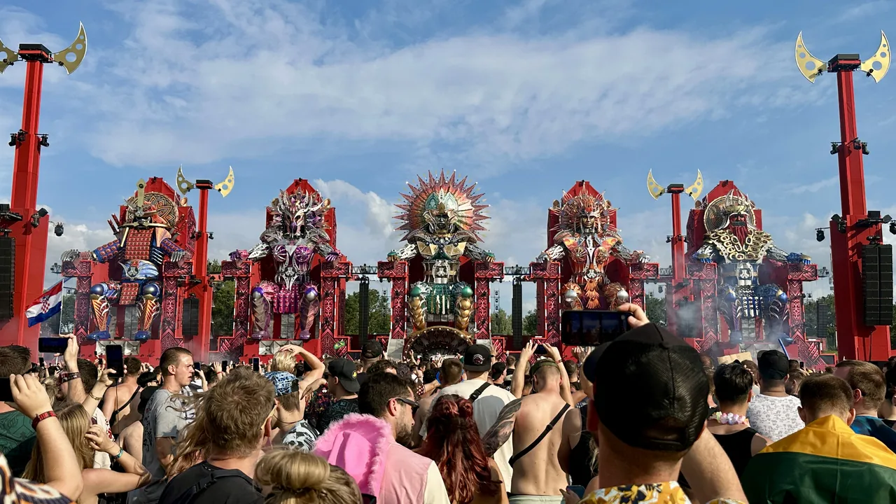

Hardstyle guide
Hardstyle: distorted kicks, reverse bass and festival scale
A late-1990s exchange between hard house, hard trance and hardcore that became the central sound of a Dutch festival circuit.
The kick carries the record.
Hardstyle announces itself through the kick. The first hit lands hard, then its distorted tail bends into a bass note and fills the space before the next beat. Around it, a track may use a trance-sized melody, a spoken sample or a dark electronic screech. That mix of force and melody grew out of European hard dance around 1999 and became the central sound of a Dutch festival circuit.
What is hardstyle?
Hardstyle is electronic dance music built around a heavily distorted, often pitched kick drum at roughly 145 to 155 beats per minute. Many tracks use reverse bass, where the bass response swells after the kick and gives the rhythm a springing motion. Long melodic breakdowns and large synthesiser leads provide the contrast: the drums can sound abrasive, but the tune above them may be openly euphoric.
The name covers several eras. Early hardstyle was slower, darker and close to hard trance and hard house. By the late 2000s, brighter melodies and pitched kicks had moved forward. Raw hardstyle later pulled towards darker atmospheres, harder kick design and shorter, more abrupt drops. Those changes make the kick, arrangement and scene more reliable identifiers than one fixed list of sounds.
1999 to 2002
Before the name.
Hardstyle developed around the turn of the millennium from records and DJ sets that crossed hard house, hard trance, techno and hardcore. The Netherlands became its main centre, but Belgian, Italian and German producers were part of the exchange. The boundaries were loose enough that early records may be filed under different names depending on the shop, compilation or listener.
The Prophet gives a useful first-person account of the transition. In a 2023 interview, he said that after a decade playing hardcore he became interested in music around 130 to 140 BPM in 1999, then made it harder with reverse bass and heavier kicks. His account describes a gradual change in DJ practice and production, not a single invention on one date.
Q-dance's artist history places The Prophet at a 1999 Houseqlassics set playing hard house. Qlubtempo followed as an event built around the emerging sound. By 2002 the term hardstyle was established enough to name the scene, while the records themselves had already been changing for several years.
The early 2000s
A scene becomes hardstyle.
The Prophet founded Scantraxx in 2002. The label's first release was Taq 9's "Slavez", made by The Prophet and DJ Gizmo, and early records by Hardheadz joined The Prophet with Pavo. Scantraxx's own history records DJ Duro's "Just Begun" in 2003 as a record that reset the standard for reverse basslines. Vinyl labels and Q-dance events gave the new style a catalogue, regular stages and a shared audience.
Early hardstyle leaves more room around the kick than much of the modern form. The reverse bass supplies a continuous low-end movement, while short stabs and hard-trance riffs do the melodic work. The kick is distorted, though its punch and tail remain easier to separate than in later designs.
Lady Dana, Pavo, Zany and The Prophet belong to this formative period. Italian producers including Technoboy and later Zatox brought their own hard-trance and hard-dance lineage into the same circuit. It is more accurate to hear these records as a conversation between scenes than as one country's finished template exported elsewhere.
2005 to 2010
The melodic turn.
Around the middle of the 2000s, the sound became more melodic and the production more detailed. Scantraxx identifies The Prophet and DJ Duro's "Shizzle My Dizzle", Brennan Heart's Blademasterz record "Masterblade" and Wildstylez's first release as markers of that shift. A younger group then pushed long breakdowns, major melodies and pitched kicks towards the centre of hardstyle.
Headhunterz's "Rock Civilization" from 2007 catches the new balance. Its lead carries as much identity as the drums, while the kick changes pitch with the musical phrase. D-Block & S-te-Fan's "Music Made Addict" followed in 2009 and became one of the label's defining records. Noisecontrollers, Wildstylez, Brennan Heart and Showtek built variations on the same contrast between pressure in the drop and release in the breakdown.
This period is often called the classic or golden era by fans. Those are retrospective labels, and the dates shift according to the listener. What can be heard is a clear move away from the sparse, hard-trance-adjacent records of the early years and towards songs whose melodies could work as festival anthems.
Euphoric hardstyle and raw hardstyle.
Euphoric hardstyle is the melodic side of the genre made explicit. It favours long breakdowns, bright chord progressions, sung or spoken hooks and kicks tuned to the lead. The label became common around 2010, after those traits had already shaped mainstream hardstyle for several years.
Raw hardstyle grew from the darker edge of the same music. Scantraxx traces the name to Zatox and Nikkita's "Raw Style" and points to A2 Records and Italian Hardstyle as early homes for the sound around the late 2000s and early 2010s. Raw tracks reduce the sentimental lift, increase the weight and variety of the kicks, and use screeches or darker melodies. B-Front and Frontliner's "Magic" shows how melody and raw pressure could coexist before the categories hardened.
The division is useful, though artists move between the two and recent records may change kick style several times in one drop. Terms such as rawphoric describe the overlap. Early hardstyle has also returned as a deliberate reference point, with reverse bass and older kick shapes reappearing in current sets.
Hardstyle, hardcore and techno.
Hardstyle shares distorted kicks with hardcore and mechanical repetition with techno, but its tempo, kick construction and breakdowns usually identify it. Hardcore commonly runs faster and treats abrasion as the main surface. Techno can be just as heavy, though it usually relies on groove and repetition rather than a long melodic breakdown followed by a pitched-kick climax.
The distinction becomes less tidy at the edges. Hard techno has borrowed hardstyle kicks, raw hardstyle can approach hardcore tempo, and some festival sets move through all three.
| Style | Typical tempo | Rhythmic centre | Melodic structure |
|---|---|---|---|
| Hardstyle | 145 to 155 BPM | Distorted pitched kick and reverse bass | Long breakdowns and large leads are common |
| Hardcore | 160 BPM and above | Faster, more abrasive kick patterns | Melody varies; impact often stays forward |
| Techno | 125 to 150 BPM | Looped groove and machine rhythm | Usually less dependent on a long melodic breakdown |
| Hard techno | 140 to 160 BPM | Driving techno groove with harder kick design | May borrow hardstyle sounds without its full arrangement |
Hardstyle festivals and the current scene.
Defqon.1 is the best-known hardstyle festival. Q-dance stages divide the harder styles by colour and sound, so classic hardstyle, raw, hardcore and related forms can sit within one weekend without being treated as identical. The Red stage is the main arena.

The wider circuit includes Decibel Outdoor, Intents Festival, REBiRTH and Reverze, with hardstyle stages also appearing at broader electronic festivals. Event names and formats change, so official festival sites are the reliable source for a current calendar.
The music has changed sharply since the long arrangements of the 2000s. Modern tracks are often shorter, drops switch kick designs more quickly, and raw styles occupy more of the main programme. Classic sets and early-hardstyle events keep older records in circulation alongside those newer forms.
Hardstyle FAQ.
What is hardstyle music?
Hardstyle is electronic dance music at roughly 145 to 155 BPM, recognised by heavily distorted and often pitched kick drums, reverse bass and large melodic breakdowns. It developed from European hard house, hard trance, techno and hardcore around the turn of the millennium.
How fast is hardstyle?
Most hardstyle sits around 145 to 155 BPM. Early records may be slower, while modern raw hardstyle can run faster or borrow the pace of hardcore. Tempo helps identify the genre, but the kick and arrangement matter more.
Is hardstyle the same as hardcore?
No. The scenes overlap and both use distorted kicks, but hardcore is generally faster and more abrasive. Hardstyle leaves more space for reverse bass, pitched kicks and melodic breakdowns. Records at the boundary may use elements of both.
Who are the best-known hardstyle artists?
The Prophet, Lady Dana, Pavo and Zany are central to the early scene. Headhunterz, Showtek, Noisecontrollers, Wildstylez, Brennan Heart and D-Block & S-te-Fan helped define its melodic expansion. B-Front, Ran-D, Adaro, Phuture Noize and others developed its darker and raw branches.
Where is hardstyle most popular?
The Netherlands remains the genre's main centre, with major audiences elsewhere in Europe and established scenes in Australia and North America. Defqon.1, Decibel Outdoor, Intents Festival and Reverze are important gathering points, though their current dates and formats should always be checked with the organisers.
Sources.
Continue reading